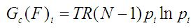

This parameter is estimated based on the random-coil framework of a polymer chain. Thus the configurational entropy of a particular structure is computed used the Shanon Entropy equation considering the random-walk probabilities that the corresponding residue could be found in its specific position taken the N-terminal residue the coordinate origin.

These probabilities are defined as follow:

Where ri means the distance between the Ca of the corresponding residue and the Ca of the N-terminal one. To the first residue of the protein chain (N-terminal residue) is assigned a free entropy value of zero. The value 3.8Å comes from the average distance between two consecutive Ca.